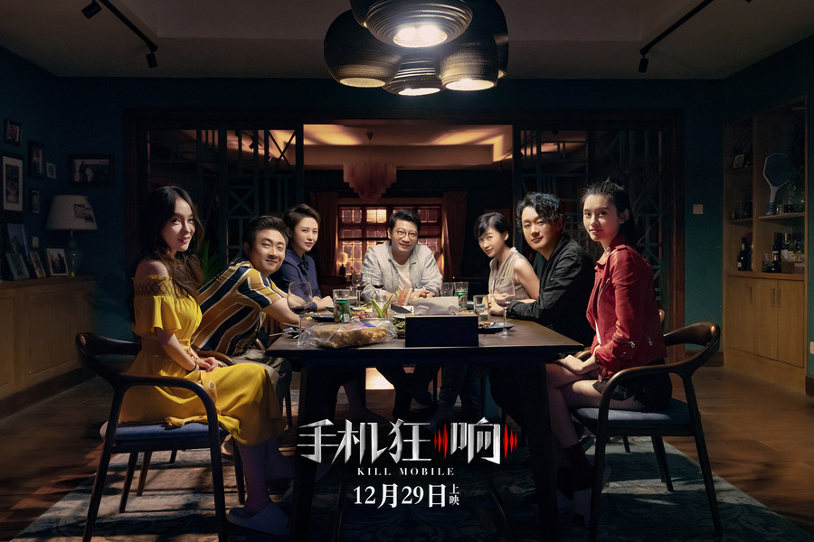

来电狂响
这个电影从来不是去控诉手机的恶， 人也不是在手机出现后才变得阴险狡诈心口不一， 高科技没有原罪，反而照出了人心的原罪。 更重要的，对人性，尤其是熟人的人性的好奇和窥探， 是跨越种族跨文化跨一切的永恒话题， 所以能畅游全球拍不衰，看不厌。
生命中有一些人与我们擦肩了，却来不及遇见;遇见了，却来不及相识;相识了，却来不及熟悉，却还要是再见。——对自己好点，因为一辈子不长;对身边的人好点，因为下辈子不一定能遇见......
要想比别人活得更好些，所以要比别人活的更辛苦些。
这个电影从来不是去控诉手机的恶， 人也不是在手机出现后才变得阴险狡诈心口不一， 高科技没有原罪，反而照出了人心的原罪。 更重要的，对人性，尤其是熟人的人性的好奇和窥探， 是跨越种族跨文化跨一切的永恒话题， 所以能畅游全球拍不衰，看不厌。